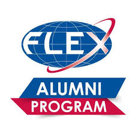

Future Leaders Exchange (FLEX) is a scholarship student exchange program administered by the U.S. Department of State through funding from the Freedom Support Act. The program provides opportunities for high school students (ages 15–19) from Eurasia, mainly from the former Eastern Bloc, to spend a year in the United States, living with a host family and attending an American high school. In 2019 program includes Armenia, Azerbaijan, the Czech Republic, Estonia, Georgia, Greece, Hungary, Kazakhstan, Kyrgyzstan, Latvia, Lithuania, Moldova, Mongolia, Montenegro, Poland, Romania, Serbia, Slovakia, Tajikistan, Turkmenistan, and Ukraine.[1] The program seeks to develop the leadership abilities and cultural awareness.
The competition is intense. Only about one in fifty applicants are ultimately selected.[2]
The program was created in 1992 after former Senator Bill Bradley’s conviction "that the best way to ensure long-lasting peace and understanding between the U.S. and Eurasia is to enable young people to learn about democracy firsthand through experiencing it".[3] Since its inception in 1993, more than 18,000 high school students from 12 Eurasian countries (two more countries which used to participate in the program are Belarus and Uzbekistan) have studied in the U.S. under the program.[2]
Initially the program included states from the former Soviet Union. In recent years, it has expanded to include countries in the Balkans and both central and eastern Europe, in addition to Mongolia.[4]
On 1 October 2014 Russia pulled out of the programme. Russian students remaining in the US were allowed by the Russian side to complete their scholarship, and in the next editions, Russian students will be replaced by students from Ukraine and other countries.[5][6]
The motive behind Russia's decision to end the cooperation was the case of a 16 year old student who had refused to return to Russia and searched for asylum in the USA on the grounds of his sexual orientation. He had met a homosexual couple and asked them for help to stay in the USA. He was put under the couple's tutelage. Russian officials criticized the USA for lack of responsibility towards Russian students.[7]

მომავალ ლიდერთა გაცვლითი პროგრამა ( ქართულად)
მომავალ ლიდერთა გაცვლითი პროგრამა (ინგლ. Future Leaders Exchange, შემოკლებით FLEX) — მოსწავლეთა გაცვლითი პროგრამა, რომელსაც ადმინისტრერებას უწევს აშშ-ის სახელმწიფო დეპარტამენტი. იგი ფინანსდება თავისუფლების მხარდაჭერის აქტის მიერ. პროგრამა საშუალებას აძლევს მოსწავლეებს (15-დან 17 წლამდე) ყოფილი საბჭოთა კავშირის ქვეყნებიდან (საქართველოს, სომხეთის, აზერბაიჯანის, ყაზახეთის, ყირგიზეთის, მოლდოვის, რუსეთის, ტაჯიკეთის, თურქმენეთის და უკრაინის ჩათვლით), გაატარონ აკადემიური წელი ამერიკის შეერთებულ შტატებში, იცხოვრონ მასპინძელ ოჯახში და ისწავლონ ამერიკულ უმაღლეს სკოლაში.
პროგრამა შეიქმნა 1992 წელს სენატორ ბილ ბრედლის მიერ. მისი აზრით, ეს პროგრამა იყო „საუკეთესო საშუალება, უზრუნველყოფილიყო ხანგრძლივვადიანი მშვიდობა და ურთიერთგაგება აშშ-სა და პოსტსაბჭოთა ქვეყნებს შორის, ასევე დემოკრატიის შესწავლა მისი უშუალო გაცნობით“. 1993 წლიდან მოყოლებული 18000-ზე მეტმა მოსწავლემ 12 პოსტსაბჭოთა ქვეყნიდან მიიღო მონაწილეობა ამ პროექტში.
future Leaders exchange program (russia)
В октябре 2014 года Россия на два года полностью приостановила участие в программе, однако позже источники газеты «Коммерсантъ» в МИД РФ заявили о полном прекращении программы[5]. Более 3 тысяч российских школьников подписали онлайн-петицию к правительству России с требованием возобновить участие в программе[6][7].
Причиной прекращения сотрудничества с США со стороны российских чиновников был назван случай невозвращения из США 17-летнего подростка[6], отправившегося на обучение в штат Мичиган в рамках обмена. Со слов детского омбудсмена, в отношении подростка была оформлена опека гомосексуальной парой, с которой он познакомился во время пребывания в США. Американская сторона опровергла заявления о незаконном усыновлении подростка[5][8][9]. Весной после окончания программы подросток отказался возвращаться на родину, совершил каминг-аут, признавшись в своей гомосексуальности, и попросил эмансипации (досрочного юридического признания совершеннолетним), что дает ему право самостоятельно выбирать место жительства, и политического убежища в США, опасаясь за свою безопасность в РФ из-за своей ориентации[6].
С момента подачи прошения школьник находился под опекой правительства США, его защитой занималась глава мичиганского Центра по защите прав иммигрантов Сюзан Рид. Мать школьника приехала в США для встречи с сыном, по словам вице-президента Американских советов по международному образованию (некоммерческая организация, которая отвечает за проведение программы FLEX) Лизы Чоат, эта поездка матери была оплачена её организацией, по словам российских дипломатов, это сделала РФ[6].
По словам создателя сайта flex-exchange.ru Эдуарда Хакимова последние выпускники программы обмена официально вернулись в свои страны весной-летом 2014 года. «Совершенно непонятно, почему шум поднялся только сейчас»[10].
По данным журналистки Маши Гессен, данный инцидент был освещён в российских СМИ со значительными искажениями, которые были переняты и зарубежной прессой. По её словам, подросток осознал свою гомосексуальность ещё на родине, где подвергался издевательствам и преследованиям. Находясь в США, он сообщил гостевой семье, в которой он проживал, о своих планах невозвращения. Не найдя у них поддержки, подросток покинул гостевую семью и обратился за помощью в местную ЛГБТ-организацию, через которую и познакомился с гей-парой, оказавшей ему поддержку. Однако узнав, что мальчик находится в США вопреки воле матери, мужчины также отказались поддерживать его, после чего беглец и обратился в Центр по защите прав иммигрантов штата Мичиган[11][12][13].
8 октября 2014 года зампред российского правительства Ольга Голодец заявила о предстоящем разбирательстве по поводу оставшегося в США школьника[14].
.jpg)